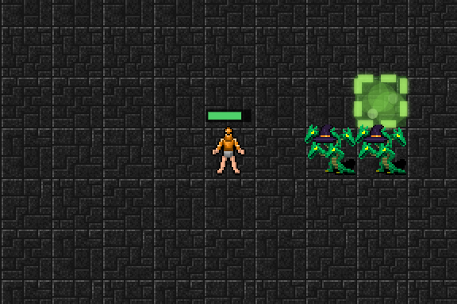

1칸 독구름도 잘 보이게
어제 네 번째 속성으로 ☁ 독구름을 넣었어요. 그런데 써 보니 "독구름이 안 보인다"는 이야기가 바로 나왔어요.
왜 안 보였을까
독구름은 몬스터가 서 있는 칸에 깔려요. 처음(Lv 1~2)에는 딱 1칸이라, 구름이 몬스터가 선 그 칸 하나뿐이에요. 그런데 화면을 그릴 때 바닥의 구름을 먼저 그리고 그 위에 몬스터를 그려서, 구름이 몬스터 그림에 거의 다 가려졌어요. 바닥 초록색도 꽤 옅게 해 둬서 더 안 보였어요.
이렇게 바꿨어요
- 구름 칸 바닥을 더 진한 초록으로 칠해요
- 구름 바깥에 빛나는 초록 점선 테두리를 둘러요. 여러 칸 구름은 바깥 둘레만 그려서 구름 모양이 한눈에 보여요
- 몬스터를 그린 다음 그 위에도 옅은 안개를 한 번 더 덮어요. 그래서 구름 속 몬스터는 안개에 잠긴 것처럼 보여요
- 3D 화면에서도 바닥의 초록 표시를 두 배쯤 진하게 했어요

구름은 몇 턴 동안 그 자리에 남아서, 몬스터가 걸어 나와도 그 칸을 다시 밟으면 독 피해를 입어요. 단계가 오르면 4칸, 9칸, 16칸으로 넓어져요.